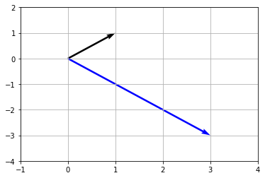
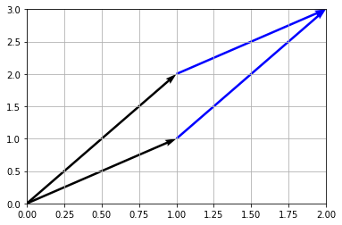
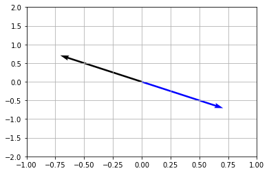
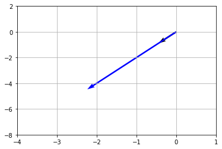

<!DOCTYPE html>
<!--[if IE 8]><html class="no-js lt-ie9" lang="en" > <![endif]-->
<!--[if gt IE 8]><!--> <html class="no-js" lang="en" > <!--<![endif]-->
<head>
  <meta charset="utf-8">
  
  <meta name="viewport" content="width=device-width, initial-scale=1.0">
  
  <title>線形代数 &mdash; DeepLearningDocument 1.0 documentation</title>
  

  
  
  
  

  
  <script type="text/javascript" src="_static/js/modernizr.min.js"></script>
  
    
      <script type="text/javascript" id="documentation_options" data-url_root="./" src="_static/documentation_options.js"></script>
        <script type="text/javascript" src="_static/jquery.js"></script>
        <script type="text/javascript" src="_static/underscore.js"></script>
        <script type="text/javascript" src="_static/doctools.js"></script>
        <script async="async" type="text/javascript" src="https://cdnjs.cloudflare.com/ajax/libs/mathjax/2.7.1/MathJax.js?config=TeX-AMS-MML_HTMLorMML"></script>
    
    <script type="text/javascript" src="_static/js/theme.js"></script>

    

  
  <link rel="stylesheet" href="_static/css/theme.css" type="text/css" />
  <link rel="stylesheet" href="_static/pygments.css" type="text/css" />
    <link rel="index" title="Index" href="genindex.html" />
    <link rel="search" title="Search" href="search.html" />
    <link rel="next" title="確率・統計" href="rabbit_ProbabilityStatistics.html" />
    <link rel="prev" title="本ページの説明と概要" href="discription.html" /> 
</head>

<body class="wy-body-for-nav">

   
  <div class="wy-grid-for-nav">
    
    <nav data-toggle="wy-nav-shift" class="wy-nav-side">
      <div class="wy-side-scroll">
        <div class="wy-side-nav-search" >
          

          
            <a href="index.html" class="icon icon-home"> DeepLearningDocument
          

          
          </a>

          
            
            
              <div class="version">
                1.0
              </div>
            
          

          
<div role="search">
  <form id="rtd-search-form" class="wy-form" action="search.html" method="get">
    <input type="text" name="q" placeholder="Search docs" />
    <input type="hidden" name="check_keywords" value="yes" />
    <input type="hidden" name="area" value="default" />
  </form>
</div>

          
        </div>

        <div class="wy-menu wy-menu-vertical" data-spy="affix" role="navigation" aria-label="main navigation">
          
            
            
              
            
            
              <p class="caption"><span class="caption-text">Contents:</span></p>
<ul class="current">
<li class="toctree-l1"><a class="reference internal" href="discription.html">本ページの説明と概要</a></li>
<li class="toctree-l1 current"><a class="current reference internal" href="#">線形代数</a><ul>
<li class="toctree-l2"><a class="reference internal" href="#id2">目標：線形代数を基礎から学び、特異値分解できるようになる</a></li>
<li class="toctree-l2"><a class="reference internal" href="#vector">◼︎ベクトル(Vector)・・・いくつかの要素を持つひとまとまり</a></li>
<li class="toctree-l2"><a class="reference internal" href="#scalar">◼︎スカラー(Scalar)・・・ひとつひとつの要素（数字自体）</a></li>
<li class="toctree-l2"><a class="reference internal" href="#matrix">◼︎行列 (Matrix) ・・・列または行がいくつか並べられたものを行列と言う。</a></li>
<li class="toctree-l2"><a class="reference internal" href="#id3">◼︎行列とベクトルの積・・・元のスカラー全ての影響をうけるように計算する。</a></li>
<li class="toctree-l2"><a class="reference internal" href="#id4">◼︎行列がかけられたベクトルはどんな変化をする？？</a></li>
<li class="toctree-l2"><a class="reference internal" href="#id5">◼︎行列同士の掛け算 （行列積）</a></li>
<li class="toctree-l2"><a class="reference internal" href="#id6">◼︎行列式・・・行列の特徴を表す指標（大きさみたいなもの）で、数（スカラー）で表す。</a></li>
<li class="toctree-l2"><a class="reference internal" href="#id7">◼︎行列式のイメージ</a></li>
<li class="toctree-l2"><a class="reference internal" href="#i">◼︎単位行列 I ・・・積が同じ行列になる行列</a></li>
<li class="toctree-l2"><a class="reference internal" href="#id8">◼︎固有ベクトル、固有値</a></li>
<li class="toctree-l2"><a class="reference internal" href="#id9">◼︎固有ベクトルってどんなベクトル？</a></li>
<li class="toctree-l2"><a class="reference internal" href="#id10">◼︎固有値分解</a></li>
<li class="toctree-l2"><a class="reference internal" href="#id11">◼︎実際に固有値分解をやってみる</a></li>
<li class="toctree-l2"><a class="reference internal" href="#id12">◼︎特異値分解</a></li>
<li class="toctree-l2"><a class="reference internal" href="#id13">◼︎特異値の求め方</a></li>
<li class="toctree-l2"><a class="reference internal" href="#id14">◼︎特異値分解を使って画像を圧縮してみよう</a></li>
<li class="toctree-l2"><a class="reference internal" href="#id15">◼︎補足</a><ul>
<li class="toctree-l3"><a class="reference internal" href="#id16">ベクトルの内積</a></li>
<li class="toctree-l3"><a class="reference internal" href="#id17">零行列</a></li>
<li class="toctree-l3"><a class="reference internal" href="#id18">逆行列</a></li>
<li class="toctree-l3"><a class="reference internal" href="#id19">転置</a></li>
<li class="toctree-l3"><a class="reference internal" href="#id20">余因子展開</a></li>
<li class="toctree-l3"><a class="reference internal" href="#id21">重複度</a></li>
<li class="toctree-l3"><a class="reference internal" href="#id22">実対称行列</a></li>
<li class="toctree-l3"><a class="reference internal" href="#id23">単位ベクトル</a></li>
</ul>
</li>
<li class="toctree-l2"><a class="reference internal" href="#id24">◼︎引用, 参考資料</a></li>
</ul>
</li>
<li class="toctree-l1"><a class="reference internal" href="rabbit_ProbabilityStatistics.html">確率・統計</a></li>
<li class="toctree-l1"><a class="reference internal" href="rabbit_InformationTheory.html">情報理論</a></li>
</ul>

            
          
        </div>
      </div>
    </nav>

    <section data-toggle="wy-nav-shift" class="wy-nav-content-wrap">

      
      <nav class="wy-nav-top" aria-label="top navigation">
        
          <i data-toggle="wy-nav-top" class="fa fa-bars"></i>
          <a href="index.html">DeepLearningDocument</a>
        
      </nav>


      <div class="wy-nav-content">
        
        <div class="rst-content">
        
          


<div role="navigation" aria-label="breadcrumbs navigation">

  <ul class="wy-breadcrumbs">
    
      <li><a href="index.html">Docs</a> &raquo;</li>
        
      <li>線形代数</li>
    
    
      <li class="wy-breadcrumbs-aside">
        
            
            <a href="_sources/rabbit_LinearAlgebra.rst.txt" rel="nofollow"> View page source</a>
          
        
      </li>
    
  </ul>

  
  <hr/>
</div>
          <div role="main" class="document" itemscope="itemscope" itemtype="http://schema.org/Article">
           <div itemprop="articleBody">
            
  <div class="section" id="id1">
<h1>線形代数<a class="headerlink" href="#id1" title="Permalink to this headline">¶</a></h1>
<div class="section" id="id2">
<h2>目標：線形代数を基礎から学び、特異値分解できるようになる<a class="headerlink" href="#id2" title="Permalink to this headline">¶</a></h2>
<div class="code ipython3 highlight-default notranslate"><div class="highlight"><pre><span></span><span class="c1"># ライブラリ読み込み</span>
<span class="kn">import</span> <span class="nn">numpy</span> <span class="k">as</span> <span class="nn">np</span>
<span class="kn">import</span> <span class="nn">matplotlib.pyplot</span> <span class="k">as</span> <span class="nn">plt</span>
<span class="kn">from</span> <span class="nn">PIL</span> <span class="k">import</span> <span class="n">Image</span>

<span class="c1"># 線形代数用</span>
<span class="kn">import</span> <span class="nn">scipy.linalg</span> <span class="k">as</span> <span class="nn">linalg</span>
</pre></div>
</div>
</div>
<div class="section" id="vector">
<h2>◼︎ベクトル(Vector)・・・いくつかの要素を持つひとまとまり<a class="headerlink" href="#vector" title="Permalink to this headline">¶</a></h2>
<p>一郎、二郎、三郎くんの身長をまとめたものは身長ベクトルになる。</p>
<div class="math notranslate nohighlight">
\[\begin{split}身長ベクトル = \begin{bmatrix} 170 \\\ 172 \\\ 175 \end{bmatrix}\end{split}\]</div>
</div>
<div class="section" id="scalar">
<h2>◼︎スカラー(Scalar)・・・ひとつひとつの要素（数字自体）<a class="headerlink" href="#scalar" title="Permalink to this headline">¶</a></h2>
<p>身長ベクトルの中の一郎くんの身長スカラーは170cmとなる。</p>
<div class="code ipython3 highlight-default notranslate"><div class="highlight"><pre><span></span><span class="n">heightVerctor</span> <span class="o">=</span> <span class="n">np</span><span class="o">.</span><span class="n">array</span><span class="p">([</span><span class="mi">170</span><span class="p">,</span> <span class="mi">172</span><span class="p">,</span> <span class="mi">175</span><span class="p">])</span>

<span class="nb">print</span><span class="p">(</span><span class="s2">&quot;身長ベクトル: &quot;</span><span class="p">,</span> <span class="n">heightVerctor</span><span class="p">)</span>
<span class="nb">print</span><span class="p">(</span><span class="s2">&quot;一郎くんの身長スカラー: &quot;</span><span class="p">,</span> <span class="n">heightVerctor</span><span class="p">[</span><span class="mi">0</span><span class="p">])</span>
</pre></div>
</div>
<div class="highlight-default notranslate"><div class="highlight"><pre><span></span><span class="n">身長ベクトル</span><span class="p">:</span>  <span class="p">[</span><span class="mi">170</span> <span class="mi">172</span> <span class="mi">175</span><span class="p">]</span>
<span class="n">一郎くんの身長スカラー</span><span class="p">:</span>  <span class="mi">170</span>
</pre></div>
</div>
</div>
<div class="section" id="matrix">
<h2>◼︎行列 (Matrix) ・・・列または行がいくつか並べられたものを行列と言う。<a class="headerlink" href="#matrix" title="Permalink to this headline">¶</a></h2>
<p>例えば一郎、二郎、三郎くんの身長ベクトルに体重を追加すると行列になる。</p>
<div class="math notranslate nohighlight">
\[\begin{split}三兄弟行列 = \begin{bmatrix} 170 &amp; 60 \\\ 172 &amp; 70 \\\ 175 &amp; 90 \end{bmatrix}\end{split}\]</div>
<div class="code ipython3 highlight-default notranslate"><div class="highlight"><pre><span></span><span class="n">brotherMatrix</span> <span class="o">=</span> <span class="n">np</span><span class="o">.</span><span class="n">array</span><span class="p">([[</span><span class="mi">170</span><span class="p">,</span> <span class="mi">172</span><span class="p">,</span> <span class="mi">175</span><span class="p">],</span> <span class="p">[</span><span class="mi">60</span><span class="p">,</span> <span class="mi">70</span><span class="p">,</span> <span class="mi">90</span><span class="p">]])</span>

<span class="nb">print</span><span class="p">(</span><span class="s2">&quot;三兄弟行列:</span><span class="se">\n</span><span class="s2">&quot;</span><span class="p">,</span> <span class="n">brotherMatrix</span><span class="p">)</span>
</pre></div>
</div>
<div class="highlight-default notranslate"><div class="highlight"><pre><span></span><span class="n">三兄弟行列</span><span class="p">:</span>
 <span class="p">[[</span><span class="mi">170</span> <span class="mi">172</span> <span class="mi">175</span><span class="p">]</span>
 <span class="p">[</span> <span class="mi">60</span>  <span class="mi">70</span>  <span class="mi">90</span><span class="p">]]</span>
</pre></div>
</div>
</div>
<div class="section" id="id3">
<h2>◼︎行列とベクトルの積・・・元のスカラー全ての影響をうけるように計算する。<a class="headerlink" href="#id3" title="Permalink to this headline">¶</a></h2>
<p>a12であればaの12(いちにぃ)成分と読む。元の1から新たな2の成分となることを意味する。</p>
<div class="math notranslate nohighlight">
\[\begin{split}\begin{bmatrix} a_{11} &amp; a_{12} &amp; a_{13} \\\ a_{21} &amp; a_{22} &amp; a_{32}\\\ a_{13} &amp; a_{23} &amp; a_{33} \end{bmatrix} \begin{bmatrix} b_1 \\\ b_2 \\\ b_3 \end{bmatrix} =\begin{bmatrix} a_{11}b_1 + a_{21}b_2 + a_{31}b_3 \\\ a_{12}b_1 + a_{22}b_2 + a_{32}b_3 \\\ a_{13}b_1 + a_{23}b_2 + a_{33}b_3 \end{bmatrix}\end{split}\]</div>
<p>三兄弟行列にさらに年齢を追加して計算してみる。</p>
<div class="math notranslate nohighlight">
\[\begin{split}\begin{bmatrix} 170 &amp; 60 &amp; 22 \\\ 172 &amp; 70 &amp; 21 \\\ 175 &amp; 90 &amp; 20 \end{bmatrix} \begin{bmatrix} 1 \\\ 2 \\\ 3 \end{bmatrix} =\begin{bmatrix} 170*1 + 172 * 2 + 175 * 3 \\\ 60*1 + 70*2 + 90*3 \\\ 22*1 + 21*2 + 20*3 \end{bmatrix}\end{split}\]</div>
<p>要素同士の積を足し合わせることで線形（直線っぽい）な結果を求めることができる。線形を求める代数（関数）なので、これらを線形代数という。</p>
<div class="code ipython3 highlight-default notranslate"><div class="highlight"><pre><span></span><span class="n">brotherMatrixWithAge</span> <span class="o">=</span> <span class="n">np</span><span class="o">.</span><span class="n">array</span><span class="p">([[</span><span class="mi">170</span><span class="p">,</span> <span class="mi">172</span><span class="p">,</span> <span class="mi">175</span><span class="p">],</span> <span class="p">[</span><span class="mi">60</span><span class="p">,</span> <span class="mi">70</span><span class="p">,</span> <span class="mi">90</span><span class="p">],</span> <span class="p">[</span><span class="mi">22</span><span class="p">,</span> <span class="mi">21</span><span class="p">,</span> <span class="mi">20</span><span class="p">]])</span>
<span class="n">multi</span> <span class="o">=</span> <span class="n">np</span><span class="o">.</span><span class="n">array</span><span class="p">([</span><span class="mi">1</span><span class="p">,</span> <span class="mi">2</span><span class="p">,</span> <span class="mi">3</span><span class="p">])</span>
<span class="n">multiBrother</span> <span class="o">=</span> <span class="n">np</span><span class="o">.</span><span class="n">dot</span><span class="p">(</span><span class="n">brotherMatrixWithAge</span><span class="p">,</span> <span class="n">multi</span><span class="p">)</span>

<span class="nb">print</span><span class="p">(</span><span class="s2">&quot;行列とベクトルの積 結果:</span><span class="se">\n</span><span class="s2">&quot;</span><span class="p">,</span> <span class="n">multiBrother</span><span class="p">)</span>
</pre></div>
</div>
<div class="highlight-default notranslate"><div class="highlight"><pre><span></span><span class="n">行列とベクトルの積</span> <span class="n">結果</span><span class="p">:</span>
 <span class="p">[</span><span class="mi">1039</span>  <span class="mi">470</span>  <span class="mi">124</span><span class="p">]</span>
</pre></div>
</div>
</div>
<div class="section" id="id4">
<h2>◼︎行列がかけられたベクトルはどんな変化をする？？<a class="headerlink" href="#id4" title="Permalink to this headline">¶</a></h2>
<p>あるベクトルにある行列をかけると（行列とベクトルの積）、ベクトルは回転して引き延ばされる！
試しに以下のようにx = [1,
1]に適当な行列をかけてみる。元々のベクトルは黒色、積の行列は青色で図示されている。黒いベクトルが青いベクトルに回転して引き延ばされていることがわかる。</p>
<div class="code ipython3 highlight-default notranslate"><div class="highlight"><pre><span></span><span class="n">A</span> <span class="o">=</span> <span class="p">[[</span> <span class="mi">2</span><span class="p">,</span> <span class="mi">1</span><span class="p">],</span>
        <span class="p">[</span><span class="o">-</span><span class="mi">1</span><span class="p">,</span><span class="o">-</span><span class="mi">2</span><span class="p">]]</span>
<span class="n">x</span> <span class="o">=</span> <span class="p">[</span><span class="mi">1</span><span class="p">,</span> <span class="mi">1</span><span class="p">]</span>

<span class="n">a</span> <span class="o">=</span> <span class="n">np</span><span class="o">.</span><span class="n">dot</span><span class="p">(</span><span class="n">A</span><span class="p">,</span> <span class="n">x</span><span class="p">)</span>

<span class="c1"># 始点</span>
<span class="n">X_s</span> <span class="o">=</span> <span class="mi">0</span>
<span class="n">Y_s</span> <span class="o">=</span> <span class="mi">0</span>
<span class="c1"># 終点</span>
<span class="n">X_e</span> <span class="o">=</span> <span class="n">x</span><span class="p">[</span><span class="mi">0</span><span class="p">]</span>
<span class="n">Y_e</span> <span class="o">=</span> <span class="n">x</span><span class="p">[</span><span class="mi">1</span><span class="p">]</span>

<span class="n">plt</span><span class="o">.</span><span class="n">quiver</span><span class="p">(</span><span class="n">X_s</span><span class="p">,</span><span class="n">Y_s</span><span class="p">,</span><span class="n">X_e</span><span class="p">,</span><span class="n">Y_e</span><span class="p">,</span><span class="n">angles</span><span class="o">=</span><span class="s1">&#39;xy&#39;</span><span class="p">,</span><span class="n">scale_units</span><span class="o">=</span><span class="s1">&#39;xy&#39;</span><span class="p">,</span><span class="n">scale</span><span class="o">=</span><span class="mi">1</span><span class="p">)</span>

<span class="n">X_s</span> <span class="o">=</span> <span class="mi">0</span>
<span class="n">Y_s</span> <span class="o">=</span> <span class="mi">0</span>
<span class="n">X_e</span> <span class="o">=</span> <span class="n">a</span><span class="p">[</span><span class="mi">0</span><span class="p">]</span>
<span class="n">Y_e</span> <span class="o">=</span> <span class="n">a</span><span class="p">[</span><span class="mi">1</span><span class="p">]</span>

<span class="n">plt</span><span class="o">.</span><span class="n">quiver</span><span class="p">(</span><span class="n">X_s</span><span class="p">,</span><span class="n">Y_s</span><span class="p">,</span><span class="n">X_e</span><span class="p">,</span><span class="n">Y_e</span><span class="p">,</span><span class="n">angles</span><span class="o">=</span><span class="s1">&#39;xy&#39;</span><span class="p">,</span><span class="n">scale_units</span><span class="o">=</span><span class="s1">&#39;xy&#39;</span><span class="p">,</span><span class="n">scale</span><span class="o">=</span><span class="mi">1</span><span class="p">,</span> <span class="n">color</span><span class="o">=</span><span class="s1">&#39;blue&#39;</span><span class="p">)</span>

<span class="c1"># グラフ表示</span>
<span class="n">plt</span><span class="o">.</span><span class="n">xlim</span><span class="p">([</span><span class="o">-</span><span class="mi">1</span><span class="p">,</span><span class="mi">4</span><span class="p">])</span>
<span class="n">plt</span><span class="o">.</span><span class="n">ylim</span><span class="p">([</span><span class="o">-</span><span class="mi">4</span><span class="p">,</span><span class="mi">2</span><span class="p">])</span>
<span class="n">plt</span><span class="o">.</span><span class="n">grid</span><span class="p">()</span>
<span class="n">plt</span><span class="o">.</span><span class="n">draw</span><span class="p">()</span>
<span class="n">plt</span><span class="o">.</span><span class="n">show</span><span class="p">()</span>
</pre></div>
</div>

</div>
<div class="section" id="id5">
<h2>◼︎行列同士の掛け算 （行列積）<a class="headerlink" href="#id5" title="Permalink to this headline">¶</a></h2>
<div class="math notranslate nohighlight">
\[\begin{split}\begin{bmatrix} a &amp; b &amp; c \\\ d &amp; e &amp; f \end{bmatrix} \begin{bmatrix} g &amp; h \\\ i &amp; j \\\ k &amp; l \end{bmatrix} = \begin{bmatrix} ag + bi + ck &amp; ah + bj + cl \\\ dg + ei + fk &amp; dh + ej + fl \end{bmatrix}\end{split}\]</div>
<p>※Aの列とBの行が異なる場合は行列積ABは定義されない。</p>
<p>※一般的に AB != BA</p>
<div class="code ipython3 highlight-default notranslate"><div class="highlight"><pre><span></span><span class="n">brotherMatrix</span> <span class="o">=</span> <span class="n">np</span><span class="o">.</span><span class="n">array</span><span class="p">([[</span><span class="mi">170</span><span class="p">,</span> <span class="mi">172</span><span class="p">,</span> <span class="mi">175</span><span class="p">],</span> <span class="p">[</span><span class="mi">60</span><span class="p">,</span> <span class="mi">70</span><span class="p">,</span> <span class="mi">90</span><span class="p">]])</span>
<span class="n">multiOne</span> <span class="o">=</span> <span class="n">np</span><span class="o">.</span><span class="n">array</span><span class="p">([[</span><span class="mi">1</span><span class="p">,</span> <span class="mi">1</span><span class="p">],</span> <span class="p">[</span><span class="mi">1</span><span class="p">,</span> <span class="mi">1</span><span class="p">],</span>  <span class="p">[</span><span class="mi">1</span><span class="p">,</span> <span class="mi">1</span><span class="p">]])</span>
<span class="n">multiBrotherMatrix</span> <span class="o">=</span> <span class="n">np</span><span class="o">.</span><span class="n">dot</span><span class="p">(</span><span class="n">brotherMatrix</span><span class="p">,</span> <span class="n">multiOne</span><span class="p">)</span>

<span class="nb">print</span><span class="p">(</span><span class="s2">&quot;行列積 結果:</span><span class="se">\n</span><span class="s2">&quot;</span><span class="p">,</span> <span class="n">multiBrotherMatrix</span><span class="p">)</span>
</pre></div>
</div>
<div class="highlight-default notranslate"><div class="highlight"><pre><span></span><span class="n">行列積</span> <span class="n">結果</span><span class="p">:</span>
 <span class="p">[[</span><span class="mi">517</span> <span class="mi">517</span><span class="p">]</span>
 <span class="p">[</span><span class="mi">220</span> <span class="mi">220</span><span class="p">]]</span>
</pre></div>
</div>
</div>
<div class="section" id="id6">
<h2>◼︎行列式・・・行列の特徴を表す指標（大きさみたいなもの）で、数（スカラー）で表す。<a class="headerlink" href="#id6" title="Permalink to this headline">¶</a></h2>
<p>例えば以下のような行列があるとする。</p>
<div class="math notranslate nohighlight">
\[\begin{split}A = \begin{bmatrix} a &amp; b \\\ c &amp; d \end{bmatrix}\end{split}\]</div>
<p>これを行列式で表すと以下のようになる。</p>
<div class="math notranslate nohighlight">
\[\begin{split}\left|&nbsp;A \right| =\begin{vmatrix} a &amp; b \\\ c &amp; d \end{vmatrix} = det \begin{bmatrix} a &amp; b \\\ c &amp; d \end{bmatrix} = ad - bc\end{split}\]</div>
<p>3次元以上の行列式は以下のよう計算する。たすき掛けのように右向きのたすきは和、左向きのたすきは差として計算する。</p>
<div class="math notranslate nohighlight">
\[\begin{split}\left|&nbsp;A \right| =\begin{vmatrix} a_{11} &amp; a_{12} &amp; a_{13} \\\ a_{21} &amp; a_{22} &amp; a_{23}\\\ a_{31} &amp; a_{32} &amp; a_{33} \end{vmatrix} = a_{11}a_{22}a_{33} + a_{12}a_{23}a_{31} + a_{13}a_{21}a_{32} - a_{13}a_{22}a_{31} - a_{12}a_{21}a_{33} - a_{11}a_{23}a_{32}\end{split}\]</div>
<div class="code ipython3 highlight-default notranslate"><div class="highlight"><pre><span></span><span class="n">sample_matrix_data</span> <span class="o">=</span> <span class="n">np</span><span class="o">.</span><span class="n">array</span><span class="p">([[</span><span class="mi">1</span><span class="p">,</span><span class="o">-</span><span class="mi">1</span><span class="p">,</span><span class="o">-</span><span class="mi">1</span><span class="p">],[</span><span class="o">-</span><span class="mi">1</span><span class="p">,</span><span class="mi">1</span><span class="p">,</span><span class="o">-</span><span class="mi">1</span><span class="p">],[</span><span class="o">-</span><span class="mi">1</span><span class="p">,</span><span class="o">-</span><span class="mi">1</span><span class="p">,</span><span class="mi">1</span><span class="p">]])</span>

<span class="nb">print</span><span class="p">(</span><span class="s2">&quot;行列式&quot;</span><span class="p">)</span>
<span class="nb">print</span><span class="p">(</span><span class="n">linalg</span><span class="o">.</span><span class="n">det</span><span class="p">(</span><span class="n">sample_matrix_data</span><span class="p">))</span>
</pre></div>
</div>
<div class="highlight-default notranslate"><div class="highlight"><pre><span></span><span class="n">行列式</span>
<span class="o">-</span><span class="mf">4.0</span>
</pre></div>
</div>
</div>
<div class="section" id="id7">
<h2>◼︎行列式のイメージ<a class="headerlink" href="#id7" title="Permalink to this headline">¶</a></h2>
<p>行列式は面積のイメージ。例えば上記の2x2の正方行列の場合はベクトルで囲まれる平行四辺形の面積と一致する。
以下の例は、ab = [[1, 2], [1, 1]] という行列の行列式は　a = [1, 2], b =
[1, 1]
の二つのベクトルで囲まれる平行四辺形の面積に一致する。（下図の黒いベクトルと青いベクトルで囲まれた面積。）</p>
<div class="code ipython3 highlight-default notranslate"><div class="highlight"><pre><span></span><span class="n">plt</span><span class="o">.</span><span class="n">figure</span><span class="p">()</span>

<span class="c1"># 始点</span>
<span class="n">X_s</span> <span class="o">=</span> <span class="mi">0</span><span class="p">,</span> <span class="mi">0</span>
<span class="n">Y_s</span> <span class="o">=</span> <span class="mi">0</span><span class="p">,</span> <span class="mi">0</span>
<span class="c1"># 終点</span>
<span class="n">X_e</span> <span class="o">=</span> <span class="mi">1</span><span class="p">,</span> <span class="mi">1</span>
<span class="n">Y_e</span> <span class="o">=</span> <span class="mi">2</span><span class="p">,</span> <span class="mi">1</span>

<span class="n">plt</span><span class="o">.</span><span class="n">quiver</span><span class="p">(</span><span class="n">X_s</span><span class="p">,</span><span class="n">Y_s</span><span class="p">,</span><span class="n">X_e</span><span class="p">,</span><span class="n">Y_e</span><span class="p">,</span><span class="n">angles</span><span class="o">=</span><span class="s1">&#39;xy&#39;</span><span class="p">,</span><span class="n">scale_units</span><span class="o">=</span><span class="s1">&#39;xy&#39;</span><span class="p">,</span><span class="n">scale</span><span class="o">=</span><span class="mi">1</span><span class="p">)</span>

<span class="n">X_s</span> <span class="o">=</span> <span class="mi">1</span><span class="p">,</span> <span class="mi">1</span>
<span class="n">Y_s</span> <span class="o">=</span> <span class="mi">2</span><span class="p">,</span> <span class="mi">1</span>
<span class="n">X_e</span> <span class="o">=</span> <span class="mi">1</span><span class="p">,</span> <span class="mi">1</span>
<span class="n">Y_e</span> <span class="o">=</span> <span class="mi">1</span><span class="p">,</span> <span class="mi">2</span>

<span class="n">plt</span><span class="o">.</span><span class="n">quiver</span><span class="p">(</span><span class="n">X_s</span><span class="p">,</span><span class="n">Y_s</span><span class="p">,</span><span class="n">X_e</span><span class="p">,</span><span class="n">Y_e</span><span class="p">,</span><span class="n">angles</span><span class="o">=</span><span class="s1">&#39;xy&#39;</span><span class="p">,</span><span class="n">scale_units</span><span class="o">=</span><span class="s1">&#39;xy&#39;</span><span class="p">,</span><span class="n">scale</span><span class="o">=</span><span class="mi">1</span><span class="p">,</span> <span class="n">color</span><span class="o">=</span><span class="s1">&#39;blue&#39;</span><span class="p">)</span>

<span class="c1"># グラフ表示</span>
<span class="n">plt</span><span class="o">.</span><span class="n">xlim</span><span class="p">([</span><span class="mi">0</span><span class="p">,</span><span class="mi">2</span><span class="p">])</span>
<span class="n">plt</span><span class="o">.</span><span class="n">ylim</span><span class="p">([</span><span class="mi">0</span><span class="p">,</span><span class="mi">3</span><span class="p">])</span>
<span class="n">plt</span><span class="o">.</span><span class="n">grid</span><span class="p">()</span>
<span class="n">plt</span><span class="o">.</span><span class="n">draw</span><span class="p">()</span>
<span class="n">plt</span><span class="o">.</span><span class="n">show</span><span class="p">()</span>
</pre></div>
</div>

</div>
<div class="section" id="i">
<h2>◼︎単位行列 I ・・・積が同じ行列になる行列<a class="headerlink" href="#i" title="Permalink to this headline">¶</a></h2>
<div class="math notranslate nohighlight">
\[\begin{split}I = \begin{bmatrix} 1 &amp; 0 &amp; 0 \\\ 0 &amp; 1 &amp; 0 \\\ 0 &amp; 0 &amp; ... \end{bmatrix}\end{split}\]</div>
<p>例は以下のような感じ。</p>
<div class="math notranslate nohighlight">
\[\begin{split}\begin{bmatrix} 1 &amp; 0 \\\ 0 &amp; 1 \end{bmatrix} \begin{bmatrix} 1 &amp; 3 \\\ 2 &amp; 4 \end{bmatrix} =\begin{bmatrix} 1 &amp; 3 \\\ 2 &amp; 4 \end{bmatrix}\end{split}\]</div>
<div class="math notranslate nohighlight">
\[\begin{split}\begin{bmatrix} 1 &amp; 3 \\\ 2 &amp; 4 \end{bmatrix}&nbsp;\begin{bmatrix} 1 &amp; 0 \\\ 0 &amp; 1 \end{bmatrix}&nbsp; =\begin{bmatrix} 1 &amp; 3 \\\ 2 &amp; 4 \end{bmatrix}\end{split}\]</div>
<p>AB = I となる行列BをAの<strong>逆行列</strong>という（この時BA = Iも成り立つ）</p>
<p>逆行列をもつ行列Aを<strong>正則行列</strong>という</p>
<div class="code ipython3 highlight-default notranslate"><div class="highlight"><pre><span></span><span class="n">sample_matrix_data</span> <span class="o">=</span> <span class="n">np</span><span class="o">.</span><span class="n">array</span><span class="p">([[</span><span class="mi">1</span><span class="p">,</span><span class="o">-</span><span class="mi">1</span><span class="p">,</span><span class="o">-</span><span class="mi">1</span><span class="p">],[</span><span class="o">-</span><span class="mi">1</span><span class="p">,</span><span class="mi">1</span><span class="p">,</span><span class="o">-</span><span class="mi">1</span><span class="p">],[</span><span class="o">-</span><span class="mi">1</span><span class="p">,</span><span class="o">-</span><span class="mi">1</span><span class="p">,</span><span class="mi">1</span><span class="p">]])</span>

<span class="nb">print</span><span class="p">(</span><span class="s2">&quot;逆行列&quot;</span><span class="p">)</span>
<span class="nb">print</span><span class="p">(</span><span class="n">linalg</span><span class="o">.</span><span class="n">inv</span><span class="p">(</span><span class="n">sample_matrix_data</span><span class="p">))</span>

<span class="nb">print</span><span class="p">(</span><span class="s2">&quot;元データと逆行列の積をとり、単位行列になっているか確認&quot;</span><span class="p">)</span>
<span class="nb">print</span><span class="p">(</span><span class="n">sample_matrix_data</span><span class="o">.</span><span class="n">dot</span><span class="p">(</span><span class="n">linalg</span><span class="o">.</span><span class="n">inv</span><span class="p">(</span><span class="n">sample_matrix_data</span><span class="p">)))</span>
</pre></div>
</div>
<div class="highlight-default notranslate"><div class="highlight"><pre><span></span>逆行列
[[ 0.  -0.5 -0.5]
 [-0.5 -0.  -0.5]
 [-0.5 -0.5  0. ]]
元データと逆行列の積をとり、単位行列になっているか確認
[[1. 0. 0.]
 [0. 1. 0.]
 [0. 0. 1.]]
</pre></div>
</div>
</div>
<div class="section" id="id8">
<h2>◼︎固有ベクトル、固有値<a class="headerlink" href="#id8" title="Permalink to this headline">¶</a></h2>
<p>行列Aとベクトルxの積はある値λ(スカラー)とベクトルxの積と一致することがある。このベクトルxを<strong>固有ベクトル</strong>、スカラーλを<strong>固有値</strong>を言う。行列Aの特徴や関係性を調べる際に用いられる。また、λxと表記する方が行列の積より簡単である。</p>
<div class="math notranslate nohighlight">
\[Ax = λx\]</div>
<div class="math notranslate nohighlight">
\[(A -λI)x = 0&nbsp; (ただし x != 0)\]</div>
<div class="math notranslate nohighlight">
\[\left|&nbsp;A -&nbsp;λI \right| = 0\]</div>
<p>例えば行列Aが以下のようだと、（Iは単位行列）</p>
<div class="math notranslate nohighlight">
\[\begin{split}A = \begin{bmatrix} 1 &amp; 4 \\\ 2 &amp; 3 \end{bmatrix}\end{split}\]</div>
<div class="math notranslate nohighlight">
\[\left|&nbsp;A -&nbsp;λI \right| = 0\]</div>
<div class="math notranslate nohighlight">
\[\begin{split}\begin{vmatrix} 1 - λ &amp; 4 \\\ 2 &amp; 3 - λ \end{vmatrix} = 0\end{split}\]</div>
<div class="math notranslate nohighlight">
\[(1 - λ)(3 - λ) - 4 × 2 = 0\]</div>
<div class="math notranslate nohighlight">
\[λ= 5 または -1\]</div>
<p>これはつまり、</p>
<div class="math notranslate nohighlight">
\[\begin{split}\begin{bmatrix} 1 &amp; 4 \\\ 2 &amp; 3 \end{bmatrix} \begin{bmatrix} x_1 \\\ x_2 \end{bmatrix} = 5 \begin{bmatrix} x_1 \\\ x_2 \end{bmatrix} ・・・①\end{split}\]</div>
<div class="math notranslate nohighlight">
\[\begin{split}\begin{bmatrix} 1 &amp; 4 \\\ 2 &amp; 3 \end{bmatrix} \begin{bmatrix} x_1 \\\ x_2 \end{bmatrix} = -1 \begin{bmatrix} x_1 \\\ x_2 \end{bmatrix} ・・・②\end{split}\]</div>
<p>まず①の式(λ=5)について解くと、</p>
<div class="math notranslate nohighlight">
\[\begin{split}\begin{bmatrix} x_1 + 4x_2 \\\ 2x_1 + 3x_2 \end{bmatrix} = \begin{bmatrix} 5x_1 \\\ 5x_2 \end{bmatrix}\end{split}\]</div>
<p>となり、以下の条件の時に<strong>固有ベクトル</strong>となる</p>
<div class="math notranslate nohighlight">
\[x_1 = x_2\]</div>
<p>次に②の式(λ=-1)について解くと、</p>
<div class="math notranslate nohighlight">
\[\begin{split}\begin{bmatrix} x_1 + 4x_2 \\\ 2x_1 + 3x_2 \end{bmatrix} = \begin{bmatrix} -x_1 \\\ -x_2 \end{bmatrix}\end{split}\]</div>
<p>となり、以下の条件の時に<strong>固有ベクトル</strong>となる</p>
<div class="math notranslate nohighlight">
\[x_1 = -2x_2\]</div>
<p>λ=5の時、(1, 1)の定数倍。とかけるし</p>
<div class="math notranslate nohighlight">
\[\begin{split}\begin{bmatrix} 1 &amp; 4 \\\ 2 &amp; 3 \end{bmatrix} \begin{bmatrix} 1 \\\ 1 \end{bmatrix} =&nbsp; 5\begin{bmatrix} 1 \\\ 1 \end{bmatrix}\end{split}\]</div>
<p>λ=-1の時、(1, -1/2)の定数倍。ともかける。</p>
<div class="math notranslate nohighlight">
\[\begin{split}\begin{bmatrix} 1 &amp; 4 \\\ 2 &amp; 3 \end{bmatrix} \begin{bmatrix} 1 \\\ -1/2 \end{bmatrix} = -1 \begin{bmatrix} 1 \\\ -1/2 \end{bmatrix}\end{split}\]</div>
<p>関係性がわかりやすく、複雑な情報を単純に表せるようになった。</p>
<p>※ |λI - A| は λ
についてのn次多項式になり，これを<strong>固有多項式</strong>と言う</p>
<div class="code ipython3 highlight-default notranslate"><div class="highlight"><pre><span></span><span class="n">sampleMatrix</span> <span class="o">=</span> <span class="n">np</span><span class="o">.</span><span class="n">array</span><span class="p">([[</span><span class="mi">1</span><span class="p">,</span> <span class="mi">2</span><span class="p">],</span> <span class="p">[</span><span class="mi">4</span><span class="p">,</span> <span class="mi">3</span><span class="p">]])</span>
<span class="n">eig_value</span><span class="p">,</span> <span class="n">eig_vector</span> <span class="o">=</span> <span class="n">linalg</span><span class="o">.</span><span class="n">eig</span><span class="p">(</span><span class="n">sampleMatrix</span><span class="p">)</span>

<span class="nb">print</span><span class="p">(</span><span class="s2">&quot;固有値&quot;</span><span class="p">)</span>
<span class="nb">print</span><span class="p">(</span><span class="n">eig_value</span><span class="p">)</span>
<span class="nb">print</span><span class="p">(</span><span class="s2">&quot;固有ベクトル&quot;</span><span class="p">)</span>
<span class="nb">print</span><span class="p">(</span><span class="n">eig_vector</span><span class="p">)</span>
</pre></div>
</div>
<div class="highlight-default notranslate"><div class="highlight"><pre><span></span><span class="n">固有値</span>
<span class="p">[</span><span class="o">-</span><span class="mf">1.</span><span class="o">+</span><span class="mf">0.</span><span class="n">j</span>  <span class="mf">5.</span><span class="o">+</span><span class="mf">0.</span><span class="n">j</span><span class="p">]</span>
<span class="n">固有ベクトル</span>
<span class="p">[[</span><span class="o">-</span><span class="mf">0.70710678</span> <span class="o">-</span><span class="mf">0.4472136</span> <span class="p">]</span>
 <span class="p">[</span> <span class="mf">0.70710678</span> <span class="o">-</span><span class="mf">0.89442719</span><span class="p">]]</span>
</pre></div>
</div>
</div>
<div class="section" id="id9">
<h2>◼︎固有ベクトルってどんなベクトル？<a class="headerlink" href="#id9" title="Permalink to this headline">¶</a></h2>
<p>固有ベクトルと、その行列をかけたベクトルは、必ず一直線になる。任意の行列とベクトルをかけると、ベクトルが回転して引き延ばされることは、これまでに試した。固有ベクトルは回転されず、直線に引き伸ばしたり逆方向のベクトルになり、一直線になることが大きな特徴である。</p>
<div class="code ipython3 highlight-default notranslate"><div class="highlight"><pre><span></span><span class="c1"># 始点</span>
<span class="n">X_s</span> <span class="o">=</span> <span class="mi">0</span>
<span class="n">Y_s</span> <span class="o">=</span> <span class="mi">0</span>
<span class="c1"># 終点</span>
<span class="n">X_e</span> <span class="o">=</span> <span class="n">eig_vector</span><span class="p">[</span><span class="mi">0</span><span class="p">,</span><span class="mi">0</span><span class="p">]</span>
<span class="n">Y_e</span> <span class="o">=</span> <span class="n">eig_vector</span><span class="p">[</span><span class="mi">1</span><span class="p">,</span><span class="mi">0</span><span class="p">]</span>

<span class="n">plt</span><span class="o">.</span><span class="n">quiver</span><span class="p">(</span><span class="n">X_s</span><span class="p">,</span><span class="n">Y_s</span><span class="p">,</span><span class="n">X_e</span><span class="p">,</span><span class="n">Y_e</span><span class="p">,</span><span class="n">angles</span><span class="o">=</span><span class="s1">&#39;xy&#39;</span><span class="p">,</span><span class="n">scale_units</span><span class="o">=</span><span class="s1">&#39;xy&#39;</span><span class="p">,</span><span class="n">scale</span><span class="o">=</span><span class="mi">1</span><span class="p">)</span>

<span class="n">MultiEigMatrix</span> <span class="o">=</span> <span class="n">np</span><span class="o">.</span><span class="n">dot</span><span class="p">(</span><span class="n">sampleMatrix</span><span class="p">,</span> <span class="n">eig_vector</span><span class="p">)</span>

<span class="n">X_s</span> <span class="o">=</span> <span class="mi">0</span>
<span class="n">Y_s</span> <span class="o">=</span> <span class="mi">0</span>
<span class="n">X_e</span> <span class="o">=</span> <span class="n">MultiEigMatrix</span><span class="p">[</span><span class="mi">0</span><span class="p">,</span><span class="mi">0</span><span class="p">]</span>
<span class="n">Y_e</span> <span class="o">=</span> <span class="n">MultiEigMatrix</span><span class="p">[</span><span class="mi">1</span><span class="p">,</span><span class="mi">0</span><span class="p">]</span>

<span class="n">plt</span><span class="o">.</span><span class="n">quiver</span><span class="p">(</span><span class="n">X_s</span><span class="p">,</span><span class="n">Y_s</span><span class="p">,</span><span class="n">X_e</span><span class="p">,</span><span class="n">Y_e</span><span class="p">,</span><span class="n">angles</span><span class="o">=</span><span class="s1">&#39;xy&#39;</span><span class="p">,</span><span class="n">scale_units</span><span class="o">=</span><span class="s1">&#39;xy&#39;</span><span class="p">,</span><span class="n">scale</span><span class="o">=</span><span class="mi">1</span><span class="p">,</span> <span class="n">color</span><span class="o">=</span><span class="s1">&#39;blue&#39;</span><span class="p">)</span>

<span class="c1"># グラフ表示</span>
<span class="n">plt</span><span class="o">.</span><span class="n">xlim</span><span class="p">([</span><span class="o">-</span><span class="mi">1</span><span class="p">,</span><span class="mi">1</span><span class="p">])</span>
<span class="n">plt</span><span class="o">.</span><span class="n">ylim</span><span class="p">([</span><span class="o">-</span><span class="mi">2</span><span class="p">,</span><span class="mi">2</span><span class="p">])</span>
<span class="n">plt</span><span class="o">.</span><span class="n">grid</span><span class="p">()</span>
<span class="n">plt</span><span class="o">.</span><span class="n">draw</span><span class="p">()</span>
<span class="n">plt</span><span class="o">.</span><span class="n">show</span><span class="p">()</span>
</pre></div>
</div>

<div class="code ipython3 highlight-default notranslate"><div class="highlight"><pre><span></span><span class="c1"># 始点</span>
<span class="n">X_s</span> <span class="o">=</span> <span class="mi">0</span>
<span class="n">Y_s</span> <span class="o">=</span> <span class="mi">0</span>
<span class="c1"># 終点</span>
<span class="n">X_e</span> <span class="o">=</span> <span class="n">eig_vector</span><span class="p">[</span><span class="mi">0</span><span class="p">,</span><span class="mi">1</span><span class="p">]</span>
<span class="n">Y_e</span> <span class="o">=</span> <span class="n">eig_vector</span><span class="p">[</span><span class="mi">1</span><span class="p">,</span><span class="mi">1</span><span class="p">]</span>

<span class="n">plt</span><span class="o">.</span><span class="n">quiver</span><span class="p">(</span><span class="n">X_s</span><span class="p">,</span><span class="n">Y_s</span><span class="p">,</span><span class="n">X_e</span><span class="p">,</span><span class="n">Y_e</span><span class="p">,</span><span class="n">angles</span><span class="o">=</span><span class="s1">&#39;xy&#39;</span><span class="p">,</span><span class="n">scale_units</span><span class="o">=</span><span class="s1">&#39;xy&#39;</span><span class="p">,</span><span class="n">scale</span><span class="o">=</span><span class="mi">1</span><span class="p">)</span>

<span class="n">MultiEigMatrix</span> <span class="o">=</span> <span class="n">np</span><span class="o">.</span><span class="n">dot</span><span class="p">(</span><span class="n">sampleMatrix</span><span class="p">,</span> <span class="n">eig_vector</span><span class="p">)</span>

<span class="n">X_s</span> <span class="o">=</span> <span class="mi">0</span>
<span class="n">Y_s</span> <span class="o">=</span> <span class="mi">0</span>
<span class="n">X_e</span> <span class="o">=</span> <span class="n">MultiEigMatrix</span><span class="p">[</span><span class="mi">0</span><span class="p">,</span><span class="mi">1</span><span class="p">]</span>
<span class="n">Y_e</span> <span class="o">=</span> <span class="n">MultiEigMatrix</span><span class="p">[</span><span class="mi">1</span><span class="p">,</span><span class="mi">1</span><span class="p">]</span>

<span class="n">plt</span><span class="o">.</span><span class="n">quiver</span><span class="p">(</span><span class="n">X_s</span><span class="p">,</span><span class="n">Y_s</span><span class="p">,</span><span class="n">X_e</span><span class="p">,</span><span class="n">Y_e</span><span class="p">,</span><span class="n">angles</span><span class="o">=</span><span class="s1">&#39;xy&#39;</span><span class="p">,</span><span class="n">scale_units</span><span class="o">=</span><span class="s1">&#39;xy&#39;</span><span class="p">,</span><span class="n">scale</span><span class="o">=</span><span class="mi">1</span><span class="p">,</span> <span class="n">color</span><span class="o">=</span><span class="s1">&#39;blue&#39;</span><span class="p">)</span>

<span class="c1"># グラフ表示</span>
<span class="n">plt</span><span class="o">.</span><span class="n">xlim</span><span class="p">([</span><span class="o">-</span><span class="mi">4</span><span class="p">,</span><span class="mi">1</span><span class="p">])</span>
<span class="n">plt</span><span class="o">.</span><span class="n">ylim</span><span class="p">([</span><span class="o">-</span><span class="mi">8</span><span class="p">,</span><span class="mi">2</span><span class="p">])</span>
<span class="n">plt</span><span class="o">.</span><span class="n">grid</span><span class="p">()</span>
<span class="n">plt</span><span class="o">.</span><span class="n">draw</span><span class="p">()</span>
<span class="n">plt</span><span class="o">.</span><span class="n">show</span><span class="p">()</span>
</pre></div>
</div>

</div>
<div class="section" id="id10">
<h2>◼︎固有値分解<a class="headerlink" href="#id10" title="Permalink to this headline">¶</a></h2>
<p>正方形の行列を、”３つの行列の積”
に変換することを<strong>固有値分解</strong>と言う。</p>
<p>固有値を対角線上に並べた行列Λ（ラムダ）</p>
<div class="math notranslate nohighlight">
\[\begin{split}Λ = \begin{bmatrix} λ_1 &amp; 0 &amp; 0 \\\ 0 &amp; λ_2 &amp; 0 \\\ 0 &amp; 0 &amp; ... \end{bmatrix}\end{split}\]</div>
<p>それに対応する固有ベクトルを並べた行列V (λ1に対応するのはv1)</p>
<div class="math notranslate nohighlight">
\[V = \begin{bmatrix} v_1 &amp; v_2 &amp; ... \end{bmatrix}\]</div>
<p>※λの順序は大きい順や小さい順に並べることが多いが順番で結果は変わらない。</p>
<p>に対して、正方行列Aは以下のように表される。</p>
<div class="math notranslate nohighlight">
\[AV = VΛ\]</div>
<p>従って</p>
<div class="math notranslate nohighlight">
\[A = VΛV^{-1}\]</div>
<p>[これまでに使った固有値と固有ベクトルを使った具体例]</p>
<div class="math notranslate nohighlight">
\[\begin{split}\begin{bmatrix} 1 &amp; 4 \\\ 2 &amp; 3 \end{bmatrix}  = \begin{bmatrix} 1 &amp; 1 \\\ 1 &amp; -1/2 \end{bmatrix} \begin{bmatrix} 5 &amp; 0 \\\ 0 &amp; -1 \end{bmatrix} \begin{bmatrix} 1/3 &amp; 2/3 \\\ 2/3 &amp; -2/3 \end{bmatrix}\end{split}\]</div>
<p>※
Vは定数倍でも良いので別の書き方もできるが、その時は最後の逆行列も変更が必要。</p>
</div>
<div class="section" id="id11">
<h2>◼︎実際に固有値分解をやってみる<a class="headerlink" href="#id11" title="Permalink to this headline">¶</a></h2>
<p>まず以下の固有値と固有ベクトルを求める。</p>
<div class="math notranslate nohighlight">
\[\begin{split}A = \begin{bmatrix} -2 &amp; 1 &amp; -1 \\\ 1 &amp; -2 &amp; 1 \\\ -1 &amp; 1 &amp; -2 \end{bmatrix}\end{split}\]</div>
<p>余因子分解で固定値と固定ベクトルを求め、掃き出し法で逆行列を求めたら固有値分解の完了。(書くと大変なので省略、また今後メンテする)</p>
<p>結果、固有値 -4 (重複度1), 固有値 -1 (重複度2)
になり、固有ベクトルwは以下のようになる。</p>
<div class="math notranslate nohighlight">
\[\begin{split}w_{-4} = α \begin{bmatrix} 1 \\\ -1 \\\ 1 \end{bmatrix} , α != 0\end{split}\]</div>
<div class="math notranslate nohighlight">
\[\begin{split}w_{-1} = β \begin{bmatrix} 1 \\\ 1 \\\ 0 \end{bmatrix} + γ \begin{bmatrix} -1 \\\ 0 \\\ 1 \end{bmatrix} , (β, γ) != 0\end{split}\]</div>
<div class="math notranslate nohighlight">
\[この時、　(w_{-4}, w_{-1}) = 0 を満たす。\]</div>
<div class="math notranslate nohighlight">
\[\begin{split}\begin{bmatrix} -2 &amp; 1 &amp; -1 \\\ 1 &amp; -2 &amp; 1 \\\ -1 &amp; 1 &amp; -2 \end{bmatrix} = \begin{bmatrix} 1 &amp; 1 &amp; -1 \\\ -1 &amp; 1 &amp; 0 \\\ 1 &amp; 0 &amp; 1 \end{bmatrix} \begin{bmatrix} -4 &amp; 0 &amp; 0 \\\ 0 &amp; -1 &amp; 0 \\\ 0 &amp; 0 &amp; -1 \end{bmatrix} \begin{bmatrix} -3/4 &amp; -1/4 &amp; 1/4 \\\ -1/4 &amp; -3/4 &amp; -1/4 \\\ 1/4 &amp; -1/4 &amp; -3/4 \end{bmatrix}\end{split}\]</div>
<div class="code ipython3 highlight-default notranslate"><div class="highlight"><pre><span></span><span class="c1"># 答え合わせ</span>
<span class="n">V</span> <span class="o">=</span> <span class="n">np</span><span class="o">.</span><span class="n">array</span><span class="p">([[</span><span class="mi">1</span><span class="p">,</span> <span class="o">-</span><span class="mi">1</span><span class="p">,</span> <span class="mi">1</span><span class="p">],</span> <span class="p">[</span><span class="mi">1</span><span class="p">,</span> <span class="mi">1</span><span class="p">,</span> <span class="mi">0</span><span class="p">],</span> <span class="p">[</span><span class="o">-</span><span class="mi">1</span><span class="p">,</span> <span class="mi">0</span><span class="p">,</span> <span class="mi">1</span><span class="p">]])</span><span class="o">.</span><span class="n">T</span>
<span class="n">E</span> <span class="o">=</span> <span class="n">np</span><span class="o">.</span><span class="n">diagflat</span><span class="p">(</span><span class="n">np</span><span class="o">.</span><span class="n">array</span><span class="p">([</span><span class="o">-</span><span class="mi">4</span><span class="p">,</span> <span class="o">-</span><span class="mi">1</span><span class="p">,</span> <span class="o">-</span><span class="mi">1</span><span class="p">]))</span>
<span class="n">V1</span> <span class="o">=</span> <span class="n">np</span><span class="o">.</span><span class="n">linalg</span><span class="o">.</span><span class="n">inv</span><span class="p">(</span><span class="n">V</span><span class="p">)</span>
<span class="n">np</span><span class="o">.</span><span class="n">dot</span><span class="p">((</span><span class="n">np</span><span class="o">.</span><span class="n">dot</span><span class="p">(</span><span class="n">V</span><span class="p">,</span> <span class="n">E</span><span class="p">)),</span> <span class="n">V1</span><span class="p">)</span>
</pre></div>
</div>
<div class="highlight-default notranslate"><div class="highlight"><pre><span></span><span class="n">array</span><span class="p">([[</span><span class="o">-</span><span class="mf">2.</span><span class="p">,</span>  <span class="mf">1.</span><span class="p">,</span> <span class="o">-</span><span class="mf">1.</span><span class="p">],</span>
       <span class="p">[</span> <span class="mf">1.</span><span class="p">,</span> <span class="o">-</span><span class="mf">2.</span><span class="p">,</span>  <span class="mf">1.</span><span class="p">],</span>
       <span class="p">[</span><span class="o">-</span><span class="mf">1.</span><span class="p">,</span>  <span class="mf">1.</span><span class="p">,</span> <span class="o">-</span><span class="mf">2.</span><span class="p">]])</span>
</pre></div>
</div>
<div class="code ipython3 highlight-default notranslate"><div class="highlight"><pre><span></span><span class="c1"># pythonのライブラリ使うと固有値分解って簡単に求まるねぇ</span>
<span class="n">A</span> <span class="o">=</span> <span class="n">np</span><span class="o">.</span><span class="n">array</span><span class="p">([[</span><span class="o">-</span><span class="mi">2</span><span class="p">,</span> <span class="mi">1</span><span class="p">,</span> <span class="o">-</span><span class="mi">1</span><span class="p">],</span> <span class="p">[</span><span class="mi">1</span><span class="p">,</span> <span class="o">-</span><span class="mi">2</span><span class="p">,</span> <span class="mi">1</span><span class="p">],</span> <span class="p">[</span><span class="o">-</span><span class="mi">1</span><span class="p">,</span> <span class="mi">1</span><span class="p">,</span> <span class="o">-</span><span class="mi">2</span><span class="p">]])</span>

<span class="n">eig_value</span><span class="p">,</span> <span class="n">eig_vector</span> <span class="o">=</span> <span class="n">linalg</span><span class="o">.</span><span class="n">eig</span><span class="p">(</span><span class="n">A</span><span class="p">)</span>

<span class="nb">print</span><span class="p">(</span><span class="s2">&quot;元のベクトル&quot;</span><span class="p">)</span>
<span class="nb">print</span><span class="p">(</span><span class="n">A</span><span class="p">)</span>
<span class="nb">print</span><span class="p">(</span><span class="s2">&quot;固有ベクトル&quot;</span><span class="p">)</span>
<span class="nb">print</span><span class="p">(</span><span class="n">eig_vector</span><span class="p">)</span>
<span class="nb">print</span><span class="p">(</span><span class="s2">&quot;固有値&quot;</span><span class="p">)</span>
<span class="nb">print</span><span class="p">(</span><span class="n">np</span><span class="o">.</span><span class="n">diagflat</span><span class="p">(</span><span class="n">eig_value</span><span class="p">))</span>
<span class="nb">print</span><span class="p">(</span><span class="s2">&quot;固有ベクトルの逆行列&quot;</span><span class="p">)</span>
<span class="nb">print</span><span class="p">(</span><span class="n">np</span><span class="o">.</span><span class="n">linalg</span><span class="o">.</span><span class="n">inv</span><span class="p">(</span><span class="n">eig_vector</span><span class="p">))</span>

<span class="n">np</span><span class="o">.</span><span class="n">dot</span><span class="p">((</span><span class="n">np</span><span class="o">.</span><span class="n">dot</span><span class="p">(</span><span class="n">eig_vector</span><span class="p">,</span> <span class="n">np</span><span class="o">.</span><span class="n">diagflat</span><span class="p">(</span><span class="n">eig_value</span><span class="p">))),</span> <span class="n">np</span><span class="o">.</span><span class="n">linalg</span><span class="o">.</span><span class="n">inv</span><span class="p">(</span><span class="n">eig_vector</span><span class="p">))</span>
</pre></div>
</div>
<div class="highlight-default notranslate"><div class="highlight"><pre><span></span><span class="n">元のベクトル</span>
<span class="p">[[</span><span class="o">-</span><span class="mi">2</span>  <span class="mi">1</span> <span class="o">-</span><span class="mi">1</span><span class="p">]</span>
 <span class="p">[</span> <span class="mi">1</span> <span class="o">-</span><span class="mi">2</span>  <span class="mi">1</span><span class="p">]</span>
 <span class="p">[</span><span class="o">-</span><span class="mi">1</span>  <span class="mi">1</span> <span class="o">-</span><span class="mi">2</span><span class="p">]]</span>
<span class="n">固有ベクトル</span>
<span class="p">[[</span> <span class="mf">0.81649658</span>  <span class="mf">0.57735027</span>  <span class="mf">0.381008</span>  <span class="p">]</span>
 <span class="p">[</span> <span class="mf">0.40824829</span> <span class="o">-</span><span class="mf">0.57735027</span>  <span class="mf">0.81590361</span><span class="p">]</span>
 <span class="p">[</span><span class="o">-</span><span class="mf">0.40824829</span>  <span class="mf">0.57735027</span>  <span class="mf">0.43489561</span><span class="p">]]</span>
<span class="n">固有値</span>
<span class="p">[[</span><span class="o">-</span><span class="mf">1.</span><span class="o">+</span><span class="mf">0.</span><span class="n">j</span>  <span class="mf">0.</span><span class="o">+</span><span class="mf">0.</span><span class="n">j</span>  <span class="mf">0.</span><span class="o">+</span><span class="mf">0.</span><span class="n">j</span><span class="p">]</span>
 <span class="p">[</span> <span class="mf">0.</span><span class="o">+</span><span class="mf">0.</span><span class="n">j</span> <span class="o">-</span><span class="mf">4.</span><span class="o">+</span><span class="mf">0.</span><span class="n">j</span>  <span class="mf">0.</span><span class="o">+</span><span class="mf">0.</span><span class="n">j</span><span class="p">]</span>
 <span class="p">[</span> <span class="mf">0.</span><span class="o">+</span><span class="mf">0.</span><span class="n">j</span>  <span class="mf">0.</span><span class="o">+</span><span class="mf">0.</span><span class="n">j</span> <span class="o">-</span><span class="mf">1.</span><span class="o">+</span><span class="mf">0.</span><span class="n">j</span><span class="p">]]</span>
<span class="n">固有ベクトルの逆行列</span>
<span class="p">[[</span> <span class="mf">8.16496581e-01</span>  <span class="mf">3.51767490e-02</span> <span class="o">-</span><span class="mf">7.81319832e-01</span><span class="p">]</span>
 <span class="p">[</span> <span class="mf">5.77350269e-01</span> <span class="o">-</span><span class="mf">5.77350269e-01</span>  <span class="mf">5.77350269e-01</span><span class="p">]</span>
 <span class="p">[</span> <span class="mf">4.43805449e-17</span>  <span class="mf">7.99488821e-01</span>  <span class="mf">7.99488821e-01</span><span class="p">]]</span>
</pre></div>
</div>
<div class="highlight-default notranslate"><div class="highlight"><pre><span></span><span class="n">array</span><span class="p">([[</span><span class="o">-</span><span class="mf">2.</span><span class="o">+</span><span class="mf">0.</span><span class="n">j</span><span class="p">,</span>  <span class="mf">1.</span><span class="o">+</span><span class="mf">0.</span><span class="n">j</span><span class="p">,</span> <span class="o">-</span><span class="mf">1.</span><span class="o">+</span><span class="mf">0.</span><span class="n">j</span><span class="p">],</span>
       <span class="p">[</span> <span class="mf">1.</span><span class="o">+</span><span class="mf">0.</span><span class="n">j</span><span class="p">,</span> <span class="o">-</span><span class="mf">2.</span><span class="o">+</span><span class="mf">0.</span><span class="n">j</span><span class="p">,</span>  <span class="mf">1.</span><span class="o">+</span><span class="mf">0.</span><span class="n">j</span><span class="p">],</span>
       <span class="p">[</span><span class="o">-</span><span class="mf">1.</span><span class="o">+</span><span class="mf">0.</span><span class="n">j</span><span class="p">,</span>  <span class="mf">1.</span><span class="o">+</span><span class="mf">0.</span><span class="n">j</span><span class="p">,</span> <span class="o">-</span><span class="mf">2.</span><span class="o">+</span><span class="mf">0.</span><span class="n">j</span><span class="p">]])</span>
</pre></div>
</div>
</div>
<div class="section" id="id12">
<h2>◼︎特異値分解<a class="headerlink" href="#id12" title="Permalink to this headline">¶</a></h2>
<p>・例えば１０００個の要素を扱う時に特異値分解すると、とても小さい数を扱えばよくなる。</p>
<p>・正方行列以外に対して行う固有値分解のことを特異値分解と言う。</p>
<p>以下、Mという正方行列でない行列がある時、右特異ベクトルvとの積によってある特異値σをつかってσuという値が求まるとする。この左特異ベクトルuの成分の数はvとは異なる。</p>
<div class="math notranslate nohighlight">
\[Mv = σu\]</div>
<p>これはMと転置すると、Mとの掛け算は、σvと求めることができる。</p>
<div class="math notranslate nohighlight">
\[M^Tu = σv\]</div>
<p>このような特殊な単位ベクトルがあるならば特異値分解できる。</p>
<div class="math notranslate nohighlight">
\[M = USV^{-1}\]</div>
<div class="math notranslate nohighlight">
\[V ・・・ v_1 .... v_n\]</div>
<div class="math notranslate nohighlight">
\[U ・・・ u_1 .... u_n\]</div>
<div class="math notranslate nohighlight">
\[S ・・・ σ_1 .... σ_n\]</div>
</div>
<div class="section" id="id13">
<h2>◼︎特異値の求め方<a class="headerlink" href="#id13" title="Permalink to this headline">¶</a></h2>
<p>下記の式が成り立つことは、上記のMv = σuが成り立つことからわかる。</p>
<div class="math notranslate nohighlight">
\[MV = US\]</div>
<div class="math notranslate nohighlight">
\[M = USV^{-1}\]</div>
<p>また、下記の式が成り立つことも転置の式からわかる。</p>
<div class="math notranslate nohighlight">
\[M^TU = VS^T\]</div>
<div class="math notranslate nohighlight">
\[M^T = VSU^{-1}\]</div>
<p>これらの積（長方形行列×その転置＝正方行列）は固有値分解可能である。</p>
<div class="math notranslate nohighlight">
\[MM^T = USV^{-1}VSU^{-1} = USS^TU^{-1}\]</div>
<p>特異値分解は、無理やり正方行列を作り、それを固有値分解したことからはじまっている。</p>
<div class="math notranslate nohighlight">
\[SS^T\]</div>
<p>というのは、特異値の二乗がずらーっと並んだ行列である。つまり、MとMの転置の積で出てくる正方行列を固有値分解して出てくる固有値Λ行列は、特異値の二乗になっている。従って、求まった固有値Λ行列の成分の√をとると、特異値S行列が求まることがわかる。</p>
<div class="code ipython3 highlight-default notranslate"><div class="highlight"><pre><span></span><span class="c1"># 特異値ベクトルを解いてみよう！！</span>
<span class="c1"># linalg.eig で求められる固有ベクトルは単位行列になるよう計算されて出力される</span>

<span class="n">M</span> <span class="o">=</span> <span class="n">np</span><span class="o">.</span><span class="n">array</span><span class="p">([[</span><span class="mi">1</span><span class="p">,</span> <span class="mi">2</span><span class="p">,</span> <span class="mi">3</span><span class="p">],</span> <span class="p">[</span><span class="mi">3</span><span class="p">,</span> <span class="mi">2</span><span class="p">,</span> <span class="mi">1</span><span class="p">]])</span>

<span class="n">M_eig</span> <span class="o">=</span> <span class="n">np</span><span class="o">.</span><span class="n">dot</span><span class="p">(</span><span class="n">M</span><span class="p">,</span> <span class="n">M</span><span class="o">.</span><span class="n">T</span><span class="p">)</span>
<span class="nb">print</span> <span class="p">(</span><span class="s2">&quot;MM^T固有分解前</span><span class="se">\n</span><span class="s2">&quot;</span><span class="p">,</span> <span class="n">M_eig</span><span class="p">)</span>
<span class="n">S</span><span class="p">,</span> <span class="n">U</span> <span class="o">=</span> <span class="n">linalg</span><span class="o">.</span><span class="n">eig</span><span class="p">(</span><span class="n">M_eig</span><span class="p">)</span>
<span class="nb">print</span> <span class="p">(</span><span class="s2">&quot;固有ベクトルV</span><span class="se">\n</span><span class="s2">&quot;</span><span class="p">,</span> <span class="n">U</span><span class="p">)</span>
<span class="nb">print</span> <span class="p">(</span><span class="s2">&quot;固有値Λ</span><span class="se">\n</span><span class="s2">&quot;</span><span class="p">,</span> <span class="n">np</span><span class="o">.</span><span class="n">diagflat</span><span class="p">(</span><span class="n">S</span><span class="p">))</span>
<span class="nb">print</span> <span class="p">(</span><span class="s2">&quot;固有ベクトルの逆行列</span><span class="se">\n</span><span class="s2">&quot;</span><span class="p">,</span> <span class="n">np</span><span class="o">.</span><span class="n">linalg</span><span class="o">.</span><span class="n">inv</span><span class="p">(</span><span class="n">U</span><span class="p">))</span>
<span class="n">M_eig</span> <span class="o">=</span> <span class="n">np</span><span class="o">.</span><span class="n">dot</span><span class="p">(</span><span class="n">np</span><span class="o">.</span><span class="n">dot</span><span class="p">(</span><span class="n">U</span><span class="p">,</span> <span class="n">np</span><span class="o">.</span><span class="n">diagflat</span><span class="p">(</span><span class="n">S</span><span class="p">)),</span> <span class="n">np</span><span class="o">.</span><span class="n">linalg</span><span class="o">.</span><span class="n">inv</span><span class="p">(</span><span class="n">U</span><span class="p">))</span>
<span class="nb">print</span> <span class="p">(</span><span class="s2">&quot;固有分解の確認</span><span class="se">\n</span><span class="s2">&quot;</span><span class="p">,</span> <span class="n">M_eig</span><span class="p">)</span>

<span class="n">M_eig</span> <span class="o">=</span> <span class="n">np</span><span class="o">.</span><span class="n">dot</span><span class="p">(</span><span class="n">M</span><span class="o">.</span><span class="n">T</span><span class="p">,</span> <span class="n">M</span><span class="p">)</span>
<span class="nb">print</span> <span class="p">(</span><span class="s2">&quot;M^T M固有分解前</span><span class="se">\n</span><span class="s2">&quot;</span><span class="p">,</span> <span class="n">M_eig</span><span class="p">)</span>
<span class="n">S</span><span class="p">,</span> <span class="n">V</span> <span class="o">=</span> <span class="n">linalg</span><span class="o">.</span><span class="n">eig</span><span class="p">(</span><span class="n">M_eig</span><span class="p">)</span>
<span class="nb">print</span> <span class="p">(</span><span class="s2">&quot;固有ベクトルV</span><span class="se">\n</span><span class="s2">&quot;</span><span class="p">,</span> <span class="n">V</span><span class="p">)</span>
<span class="nb">print</span> <span class="p">(</span><span class="s2">&quot;固有値Λ</span><span class="se">\n</span><span class="s2">&quot;</span><span class="p">,</span> <span class="n">np</span><span class="o">.</span><span class="n">diagflat</span><span class="p">(</span><span class="n">S</span><span class="p">))</span>
<span class="nb">print</span> <span class="p">(</span><span class="s2">&quot;固有ベクトルの逆行列</span><span class="se">\n</span><span class="s2">&quot;</span><span class="p">,</span> <span class="n">np</span><span class="o">.</span><span class="n">linalg</span><span class="o">.</span><span class="n">inv</span><span class="p">(</span><span class="n">V</span><span class="p">))</span>
<span class="n">M_eig</span> <span class="o">=</span> <span class="n">np</span><span class="o">.</span><span class="n">dot</span><span class="p">(</span><span class="n">np</span><span class="o">.</span><span class="n">dot</span><span class="p">(</span><span class="n">V</span><span class="p">,</span> <span class="n">np</span><span class="o">.</span><span class="n">diagflat</span><span class="p">(</span><span class="n">S</span><span class="p">)),</span> <span class="n">np</span><span class="o">.</span><span class="n">linalg</span><span class="o">.</span><span class="n">inv</span><span class="p">(</span><span class="n">V</span><span class="p">))</span>
<span class="nb">print</span> <span class="p">(</span><span class="s2">&quot;固有分解の確認</span><span class="se">\n</span><span class="s2">&quot;</span><span class="p">,</span> <span class="n">M_eig</span><span class="p">)</span>

<span class="c1"># 答え合わせ</span>
<span class="c1"># √にして固有値から特異値を求める。</span>
<span class="n">S</span> <span class="o">=</span> <span class="n">np</span><span class="o">.</span><span class="n">array</span><span class="p">([[</span><span class="n">np</span><span class="o">.</span><span class="n">sqrt</span><span class="p">(</span><span class="n">S</span><span class="p">[</span><span class="mi">0</span><span class="p">]),</span> <span class="mi">0</span><span class="p">,</span> <span class="mi">0</span><span class="p">],</span> <span class="p">[</span><span class="mi">0</span><span class="p">,</span> <span class="n">np</span><span class="o">.</span><span class="n">sqrt</span><span class="p">(</span><span class="n">S</span><span class="p">[</span><span class="mi">1</span><span class="p">]),</span> <span class="mi">0</span><span class="p">]])</span>
<span class="nb">print</span> <span class="p">(</span><span class="s2">&quot;左特異ベクトルU</span><span class="se">\n</span><span class="s2">&quot;</span><span class="p">,</span> <span class="n">U</span><span class="p">)</span>
<span class="nb">print</span> <span class="p">(</span><span class="s2">&quot;特異値S</span><span class="se">\n</span><span class="s2">&quot;</span><span class="p">,</span> <span class="n">S</span><span class="p">)</span>
<span class="nb">print</span> <span class="p">(</span><span class="s2">&quot;右特異ベクトルV^{-1}</span><span class="se">\n</span><span class="s2">&quot;</span><span class="p">,</span> <span class="n">np</span><span class="o">.</span><span class="n">linalg</span><span class="o">.</span><span class="n">inv</span><span class="p">(</span><span class="n">V</span><span class="p">))</span>

<span class="c1"># ライブラリも使って答え合わせ</span>
<span class="n">svd_U</span><span class="p">,</span> <span class="n">svd_S</span><span class="p">,</span> <span class="n">svd_V</span> <span class="o">=</span> <span class="n">linalg</span><span class="o">.</span><span class="n">svd</span><span class="p">(</span><span class="n">M</span><span class="p">)</span>
<span class="c1">#　linalg.svd出力の特異値はベクトルのため、専用の linalg.diagsvd で行列に変換</span>
<span class="n">svd_S</span> <span class="o">=</span> <span class="n">linalg</span><span class="o">.</span><span class="n">diagsvd</span><span class="p">(</span><span class="n">svd_S</span><span class="p">,</span> <span class="mi">2</span><span class="p">,</span> <span class="mi">3</span><span class="p">)</span>
<span class="nb">print</span> <span class="p">(</span><span class="s2">&quot;ライブラリで求めた左特異ベクトルU</span><span class="se">\n</span><span class="s2">&quot;</span><span class="p">,</span> <span class="n">svd_U</span><span class="p">)</span>
<span class="nb">print</span> <span class="p">(</span><span class="s2">&quot;ライブラリで求めた特異値S</span><span class="se">\n</span><span class="s2">&quot;</span><span class="p">,</span> <span class="n">svd_S</span><span class="p">)</span>
<span class="nb">print</span> <span class="p">(</span><span class="s2">&quot;ライブラリで求めた右特異ベクトルV^{-1}</span><span class="se">\n</span><span class="s2">&quot;</span><span class="p">,</span> <span class="n">svd_V</span><span class="p">)</span>
<span class="nb">print</span> <span class="p">(</span><span class="s2">&quot;ライブラリの確認</span><span class="se">\n</span><span class="s2">&quot;</span><span class="p">,</span> <span class="n">np</span><span class="o">.</span><span class="n">dot</span><span class="p">(</span><span class="n">np</span><span class="o">.</span><span class="n">dot</span><span class="p">(</span><span class="n">svd_U</span><span class="p">,</span> <span class="n">svd_S</span><span class="p">),</span> <span class="n">svd_V</span><span class="p">))</span>

<span class="n">M</span> <span class="o">=</span> <span class="n">np</span><span class="o">.</span><span class="n">dot</span><span class="p">(</span><span class="n">np</span><span class="o">.</span><span class="n">dot</span><span class="p">(</span><span class="n">U</span><span class="p">,</span> <span class="n">S</span><span class="p">),</span> <span class="n">np</span><span class="o">.</span><span class="n">linalg</span><span class="o">.</span><span class="n">inv</span><span class="p">(</span><span class="n">V</span><span class="p">))</span>
<span class="n">M</span>
</pre></div>
</div>
<div class="highlight-default notranslate"><div class="highlight"><pre><span></span><span class="n">MM</span><span class="o">^</span><span class="n">T固有分解前</span>
 <span class="p">[[</span><span class="mi">14</span> <span class="mi">10</span><span class="p">]</span>
 <span class="p">[</span><span class="mi">10</span> <span class="mi">14</span><span class="p">]]</span>
<span class="n">固有ベクトルV</span>
 <span class="p">[[</span> <span class="mf">0.70710678</span> <span class="o">-</span><span class="mf">0.70710678</span><span class="p">]</span>
 <span class="p">[</span> <span class="mf">0.70710678</span>  <span class="mf">0.70710678</span><span class="p">]]</span>
<span class="n">固有値Λ</span>
 <span class="p">[[</span><span class="mf">24.</span><span class="o">+</span><span class="mf">0.</span><span class="n">j</span>  <span class="mf">0.</span><span class="o">+</span><span class="mf">0.</span><span class="n">j</span><span class="p">]</span>
 <span class="p">[</span> <span class="mf">0.</span><span class="o">+</span><span class="mf">0.</span><span class="n">j</span>  <span class="mf">4.</span><span class="o">+</span><span class="mf">0.</span><span class="n">j</span><span class="p">]]</span>
<span class="n">固有ベクトルの逆行列</span>
 <span class="p">[[</span> <span class="mf">0.70710678</span>  <span class="mf">0.70710678</span><span class="p">]</span>
 <span class="p">[</span><span class="o">-</span><span class="mf">0.70710678</span>  <span class="mf">0.70710678</span><span class="p">]]</span>
<span class="n">固有分解の確認</span>
 <span class="p">[[</span><span class="mf">14.</span><span class="o">+</span><span class="mf">0.</span><span class="n">j</span> <span class="mf">10.</span><span class="o">+</span><span class="mf">0.</span><span class="n">j</span><span class="p">]</span>
 <span class="p">[</span><span class="mf">10.</span><span class="o">+</span><span class="mf">0.</span><span class="n">j</span> <span class="mf">14.</span><span class="o">+</span><span class="mf">0.</span><span class="n">j</span><span class="p">]]</span>
<span class="n">M</span><span class="o">^</span><span class="n">T</span> <span class="n">M固有分解前</span>
 <span class="p">[[</span><span class="mi">10</span>  <span class="mi">8</span>  <span class="mi">6</span><span class="p">]</span>
 <span class="p">[</span> <span class="mi">8</span>  <span class="mi">8</span>  <span class="mi">8</span><span class="p">]</span>
 <span class="p">[</span> <span class="mi">6</span>  <span class="mi">8</span> <span class="mi">10</span><span class="p">]]</span>
<span class="n">固有ベクトルV</span>
 <span class="p">[[</span><span class="o">-</span><span class="mf">5.77350269e-01</span> <span class="o">-</span><span class="mf">7.07106781e-01</span>  <span class="mf">4.08248290e-01</span><span class="p">]</span>
 <span class="p">[</span><span class="o">-</span><span class="mf">5.77350269e-01</span> <span class="o">-</span><span class="mf">5.84963758e-16</span> <span class="o">-</span><span class="mf">8.16496581e-01</span><span class="p">]</span>
 <span class="p">[</span><span class="o">-</span><span class="mf">5.77350269e-01</span>  <span class="mf">7.07106781e-01</span>  <span class="mf">4.08248290e-01</span><span class="p">]]</span>
<span class="n">固有値Λ</span>
 <span class="p">[[</span> <span class="mf">2.40000000e+01</span><span class="o">+</span><span class="mf">0.</span><span class="n">j</span>  <span class="mf">0.00000000e+00</span><span class="o">+</span><span class="mf">0.</span><span class="n">j</span>  <span class="mf">0.00000000e+00</span><span class="o">+</span><span class="mf">0.</span><span class="n">j</span><span class="p">]</span>
 <span class="p">[</span> <span class="mf">0.00000000e+00</span><span class="o">+</span><span class="mf">0.</span><span class="n">j</span>  <span class="mf">4.00000000e+00</span><span class="o">+</span><span class="mf">0.</span><span class="n">j</span>  <span class="mf">0.00000000e+00</span><span class="o">+</span><span class="mf">0.</span><span class="n">j</span><span class="p">]</span>
 <span class="p">[</span> <span class="mf">0.00000000e+00</span><span class="o">+</span><span class="mf">0.</span><span class="n">j</span>  <span class="mf">0.00000000e+00</span><span class="o">+</span><span class="mf">0.</span><span class="n">j</span> <span class="o">-</span><span class="mf">1.92395977e-15</span><span class="o">+</span><span class="mf">0.</span><span class="n">j</span><span class="p">]]</span>
<span class="n">固有ベクトルの逆行列</span>
 <span class="p">[[</span><span class="o">-</span><span class="mf">5.77350269e-01</span> <span class="o">-</span><span class="mf">5.77350269e-01</span> <span class="o">-</span><span class="mf">5.77350269e-01</span><span class="p">]</span>
 <span class="p">[</span><span class="o">-</span><span class="mf">7.07106781e-01</span>  <span class="mf">9.61481343e-17</span>  <span class="mf">7.07106781e-01</span><span class="p">]</span>
 <span class="p">[</span> <span class="mf">4.08248290e-01</span> <span class="o">-</span><span class="mf">8.16496581e-01</span>  <span class="mf">4.08248290e-01</span><span class="p">]]</span>
<span class="n">固有分解の確認</span>
 <span class="p">[[</span><span class="mf">10.</span><span class="o">+</span><span class="mf">0.</span><span class="n">j</span>  <span class="mf">8.</span><span class="o">+</span><span class="mf">0.</span><span class="n">j</span>  <span class="mf">6.</span><span class="o">+</span><span class="mf">0.</span><span class="n">j</span><span class="p">]</span>
 <span class="p">[</span> <span class="mf">8.</span><span class="o">+</span><span class="mf">0.</span><span class="n">j</span>  <span class="mf">8.</span><span class="o">+</span><span class="mf">0.</span><span class="n">j</span>  <span class="mf">8.</span><span class="o">+</span><span class="mf">0.</span><span class="n">j</span><span class="p">]</span>
 <span class="p">[</span> <span class="mf">6.</span><span class="o">+</span><span class="mf">0.</span><span class="n">j</span>  <span class="mf">8.</span><span class="o">+</span><span class="mf">0.</span><span class="n">j</span> <span class="mf">10.</span><span class="o">+</span><span class="mf">0.</span><span class="n">j</span><span class="p">]]</span>
<span class="n">左特異ベクトルU</span>
 <span class="p">[[</span> <span class="mf">0.70710678</span> <span class="o">-</span><span class="mf">0.70710678</span><span class="p">]</span>
 <span class="p">[</span> <span class="mf">0.70710678</span>  <span class="mf">0.70710678</span><span class="p">]]</span>
<span class="n">特異値S</span>
 <span class="p">[[</span><span class="mf">4.89897949</span><span class="o">+</span><span class="mf">0.</span><span class="n">j</span> <span class="mf">0.</span>        <span class="o">+</span><span class="mf">0.</span><span class="n">j</span> <span class="mf">0.</span>        <span class="o">+</span><span class="mf">0.</span><span class="n">j</span><span class="p">]</span>
 <span class="p">[</span><span class="mf">0.</span>        <span class="o">+</span><span class="mf">0.</span><span class="n">j</span> <span class="mf">2.</span>        <span class="o">+</span><span class="mf">0.</span><span class="n">j</span> <span class="mf">0.</span>        <span class="o">+</span><span class="mf">0.</span><span class="n">j</span><span class="p">]]</span>
<span class="n">右特異ベクトルV</span><span class="o">^</span><span class="p">{</span><span class="o">-</span><span class="mi">1</span><span class="p">}</span>
 <span class="p">[[</span><span class="o">-</span><span class="mf">5.77350269e-01</span> <span class="o">-</span><span class="mf">5.77350269e-01</span> <span class="o">-</span><span class="mf">5.77350269e-01</span><span class="p">]</span>
 <span class="p">[</span><span class="o">-</span><span class="mf">7.07106781e-01</span>  <span class="mf">9.61481343e-17</span>  <span class="mf">7.07106781e-01</span><span class="p">]</span>
 <span class="p">[</span> <span class="mf">4.08248290e-01</span> <span class="o">-</span><span class="mf">8.16496581e-01</span>  <span class="mf">4.08248290e-01</span><span class="p">]]</span>
<span class="n">ライブラリで求めた左特異ベクトルU</span>
 <span class="p">[[</span><span class="o">-</span><span class="mf">0.70710678</span> <span class="o">-</span><span class="mf">0.70710678</span><span class="p">]</span>
 <span class="p">[</span><span class="o">-</span><span class="mf">0.70710678</span>  <span class="mf">0.70710678</span><span class="p">]]</span>
<span class="n">ライブラリで求めた特異値S</span>
 <span class="p">[[</span><span class="mf">4.89897949</span> <span class="mf">0.</span>         <span class="mf">0.</span>        <span class="p">]</span>
 <span class="p">[</span><span class="mf">0.</span>         <span class="mf">2.</span>         <span class="mf">0.</span>        <span class="p">]]</span>
<span class="n">ライブラリで求めた右特異ベクトルV</span><span class="o">^</span><span class="p">{</span><span class="o">-</span><span class="mi">1</span><span class="p">}</span>
 <span class="p">[[</span><span class="o">-</span><span class="mf">5.77350269e-01</span> <span class="o">-</span><span class="mf">5.77350269e-01</span> <span class="o">-</span><span class="mf">5.77350269e-01</span><span class="p">]</span>
 <span class="p">[</span> <span class="mf">7.07106781e-01</span>  <span class="mf">3.05311332e-16</span> <span class="o">-</span><span class="mf">7.07106781e-01</span><span class="p">]</span>
 <span class="p">[</span> <span class="mf">4.08248290e-01</span> <span class="o">-</span><span class="mf">8.16496581e-01</span>  <span class="mf">4.08248290e-01</span><span class="p">]]</span>
<span class="n">ライブラリの確認</span>
 <span class="p">[[</span><span class="mf">1.</span> <span class="mf">2.</span> <span class="mf">3.</span><span class="p">]</span>
 <span class="p">[</span><span class="mf">3.</span> <span class="mf">2.</span> <span class="mf">1.</span><span class="p">]]</span>
</pre></div>
</div>
<div class="highlight-default notranslate"><div class="highlight"><pre><span></span><span class="n">array</span><span class="p">([[</span><span class="o">-</span><span class="mf">1.</span><span class="o">+</span><span class="mf">0.</span><span class="n">j</span><span class="p">,</span> <span class="o">-</span><span class="mf">2.</span><span class="o">+</span><span class="mf">0.</span><span class="n">j</span><span class="p">,</span> <span class="o">-</span><span class="mf">3.</span><span class="o">+</span><span class="mf">0.</span><span class="n">j</span><span class="p">],</span>
       <span class="p">[</span><span class="o">-</span><span class="mf">3.</span><span class="o">+</span><span class="mf">0.</span><span class="n">j</span><span class="p">,</span> <span class="o">-</span><span class="mf">2.</span><span class="o">+</span><span class="mf">0.</span><span class="n">j</span><span class="p">,</span> <span class="o">-</span><span class="mf">1.</span><span class="o">+</span><span class="mf">0.</span><span class="n">j</span><span class="p">]])</span>
</pre></div>
</div>
</div>
<div class="section" id="id14">
<h2>◼︎特異値分解を使って画像を圧縮してみよう<a class="headerlink" href="#id14" title="Permalink to this headline">¶</a></h2>
<p>特異値分解を使って画像データの行列から成分の小さい部分を取り除く。これを<strong>低ランク近似</strong>と言う。原理としては、左特異ベクトルu,
特異値σ, 右特異ベクトルv を使った以下の式を用いる。</p>
<div class="math notranslate nohighlight">
\[A_k = \sum _{i=1} ^{k} {u_i σ_i v_i}, k = 1, 2, ... max(m, n)\]</div>
<div class="code ipython3 highlight-default notranslate"><div class="highlight"><pre><span></span><span class="c1"># まず、元画像をグレースケール</span>
<span class="n">image</span> <span class="o">=</span> <span class="n">Image</span><span class="o">.</span><span class="n">open</span><span class="p">(</span><span class="s1">&#39;dog.jpg&#39;</span><span class="p">)</span>
<span class="n">gray_image</span> <span class="o">=</span> <span class="n">image</span><span class="o">.</span><span class="n">convert</span><span class="p">(</span><span class="s1">&#39;L&#39;</span><span class="p">)</span>
<span class="n">gray_image</span><span class="o">.</span><span class="n">save</span><span class="p">(</span><span class="s1">&#39;mono_dog.jpg&#39;</span><span class="p">)</span>
<span class="nb">print</span><span class="p">(</span><span class="s2">&quot;元画像&quot;</span><span class="p">)</span>
<span class="n">gray_image</span>
</pre></div>
</div>
<div class="highlight-default notranslate"><div class="highlight"><pre><span></span><span class="n">元画像</span>
</pre></div>
</div>

<div class="code ipython3 highlight-default notranslate"><div class="highlight"><pre><span></span><span class="n">gray_image</span> <span class="o">=</span> <span class="n">Image</span><span class="o">.</span><span class="n">open</span><span class="p">(</span><span class="s1">&#39;mono_dog.jpg&#39;</span><span class="p">)</span>
<span class="n">gray_image_array</span> <span class="o">=</span> <span class="n">np</span><span class="o">.</span><span class="n">array</span><span class="p">(</span><span class="n">gray_image</span><span class="p">)</span>

<span class="c1">#  特異値分解</span>
<span class="n">svd_U</span><span class="p">,</span> <span class="n">svd_S</span><span class="p">,</span> <span class="n">svd_V</span> <span class="o">=</span> <span class="n">linalg</span><span class="o">.</span><span class="n">svd</span><span class="p">(</span><span class="n">gray_image_array</span><span class="p">)</span>

<span class="c1"># 低ランク近似値</span>
<span class="n">k</span> <span class="o">=</span> <span class="mi">32</span>

<span class="c1"># 左特異行列Uからk列目までの左特異ベクトルを抜き出す/ shape [853, 32]</span>
<span class="n">U</span> <span class="o">=</span> <span class="n">svd_U</span><span class="p">[:,</span> <span class="p">:</span><span class="n">k</span><span class="p">]</span>
<span class="c1"># 特異値ベクトルを特異値行列へ変換し、近似値分抜き出す/ shape [32, 32]</span>
<span class="n">S</span> <span class="o">=</span> <span class="n">np</span><span class="o">.</span><span class="n">matrix</span><span class="p">(</span><span class="n">linalg</span><span class="o">.</span><span class="n">diagsvd</span><span class="p">(</span><span class="n">svd_S</span><span class="p">[:</span><span class="n">k</span><span class="p">],</span> <span class="n">k</span><span class="p">,</span> <span class="n">k</span><span class="p">))</span>
<span class="c1"># 右特異ベクトルVからk行目までの右特異ベクトルを抜き出す / shape [32, 1280]</span>
<span class="n">V</span> <span class="o">=</span> <span class="n">svd_V</span><span class="p">[:</span><span class="n">k</span><span class="p">,</span> <span class="p">:]</span>

<span class="c1"># 注意：行列積ではなく、要素同士の積を計算する</span>
<span class="n">new_image</span> <span class="o">=</span> <span class="n">U</span><span class="o">*</span><span class="n">S</span><span class="o">*</span><span class="n">V</span>
<span class="n">new_image</span> <span class="o">=</span> <span class="n">Image</span><span class="o">.</span><span class="n">fromarray</span><span class="p">(</span><span class="n">np</span><span class="o">.</span><span class="n">uint8</span><span class="p">(</span><span class="n">new_image</span><span class="p">))</span>
<span class="c1">#new_image.save(&#39;k32_mono_dog.jpg&#39;)</span>
<span class="nb">print</span><span class="p">(</span><span class="s2">&quot;特異値分解による画像圧縮後&quot;</span><span class="p">)</span>
<span class="n">new_image</span>
</pre></div>
</div>
<div class="highlight-default notranslate"><div class="highlight"><pre><span></span><span class="n">特異値分解による画像圧縮後</span>
</pre></div>
</div>

<div class="code ipython3 highlight-default notranslate"><div class="highlight"><pre><span></span><span class="c1"># Python スライスの使い方</span>
<span class="n">sample</span> <span class="o">=</span> <span class="n">np</span><span class="o">.</span><span class="n">array</span><span class="p">([[</span><span class="mi">11</span><span class="p">,</span><span class="mi">12</span><span class="p">,</span><span class="mi">13</span><span class="p">],</span> <span class="p">[</span><span class="mi">21</span><span class="p">,</span><span class="mi">22</span><span class="p">,</span><span class="mi">23</span><span class="p">]])</span>
<span class="nb">print</span><span class="p">(</span><span class="s2">&quot;スライスで1列目までを表示</span><span class="se">\n</span><span class="s2">&quot;</span><span class="p">,</span> <span class="n">sample</span><span class="p">[:,</span> <span class="p">:</span><span class="mi">1</span><span class="p">])</span>
<span class="nb">print</span><span class="p">(</span><span class="s2">&quot;スライスで2列目までを表示</span><span class="se">\n</span><span class="s2">&quot;</span><span class="p">,</span> <span class="n">sample</span><span class="p">[:,</span> <span class="p">:</span><span class="mi">2</span><span class="p">])</span>
</pre></div>
</div>
<div class="highlight-default notranslate"><div class="highlight"><pre><span></span><span class="n">スライスで1列目までを表示</span>
 <span class="p">[[</span><span class="mi">11</span><span class="p">]</span>
 <span class="p">[</span><span class="mi">21</span><span class="p">]]</span>
<span class="n">スライスで2列目までを表示</span>
 <span class="p">[[</span><span class="mi">11</span> <span class="mi">12</span><span class="p">]</span>
 <span class="p">[</span><span class="mi">21</span> <span class="mi">22</span><span class="p">]]</span>
</pre></div>
</div>
</div>
<div class="section" id="id15">
<h2>◼︎補足<a class="headerlink" href="#id15" title="Permalink to this headline">¶</a></h2>
<div class="section" id="id16">
<h3>ベクトルの内積<a class="headerlink" href="#id16" title="Permalink to this headline">¶</a></h3>
<div class="math notranslate nohighlight">
\[x = \begin{bmatrix} x_1 &amp; x_2 &amp; ... &amp;  x_n \end{bmatrix}\]</div>
<div class="math notranslate nohighlight">
\[y = \begin{bmatrix} y_1 &amp; y_2 &amp; ... &amp;  y_n \end{bmatrix}\]</div>
<p>これらxベクトルとyベクトルの内積は、</p>
<div class="math notranslate nohighlight">
\[x_1y_1 + x_2y_2 + ... + x_ny_n\]</div>
<p>※ 次元が違うベクトル同士の内積は定義されない</p>
</div>
<div class="section" id="id17">
<h3>零行列<a class="headerlink" href="#id17" title="Permalink to this headline">¶</a></h3>
<p>全ての要素が０の行列を０行列と言う</p>
</div>
<div class="section" id="id18">
<h3>逆行列<a class="headerlink" href="#id18" title="Permalink to this headline">¶</a></h3>
<p>AB = I となる行列BをAの逆行列と言い、</p>
<div class="math notranslate nohighlight">
\[B = A^{-1}\]</div>
<p>※逆行列は存在しないこともある。逆行列は余因子を使って表せる行列を行列式で割ったものなので、行列式が0である場合は、その行列は逆行列を持たないことになる。</p>
<div class="math notranslate nohighlight">
\[｜A｜＝ad-bc=0\]</div>
<p>となる行列は逆行列を持たない。</p>
</div>
<div class="section" id="id19">
<h3>転置<a class="headerlink" href="#id19" title="Permalink to this headline">¶</a></h3>
<div class="math notranslate nohighlight">
\[（A^T)_{ij} = A_ji\]</div>
<div class="math notranslate nohighlight">
\[\begin{split}\begin{bmatrix} a &amp; b &amp; c \\\ d &amp; e &amp; f \end{bmatrix}^T = \begin{bmatrix} a &amp; d \\\ b &amp; e \\\ c &amp; f \end{bmatrix}\end{split}\]</div>
<p>となる</p>
<div class="math notranslate nohighlight">
\[A^T = A\]</div>
<p>となる正方行列Aを対称行列という</p>
</div>
<div class="section" id="id20">
<h3>余因子展開<a class="headerlink" href="#id20" title="Permalink to this headline">¶</a></h3>
<div class="math notranslate nohighlight">
\[\begin{split}\begin{bmatrix} a &amp; b &amp; c \\\ d &amp; e &amp; f \\\ g &amp; h &amp; i \end{bmatrix} = a \begin{vmatrix} e &amp; f \\\ h &amp; i \end{vmatrix} - b \begin{vmatrix} d &amp; f \\\ g &amp; i \end{vmatrix} + c \begin{vmatrix} d &amp; e \\\ g &amp; h \end{vmatrix}\end{split}\]</div>
</div>
<div class="section" id="id21">
<h3>重複度<a class="headerlink" href="#id21" title="Permalink to this headline">¶</a></h3>
<p>代数学の基本定理
n次方程式は複素数の範囲に(重複度を含めて)必ずn個の解を持つ。というのが「代数学の基本定理」であった。固有値と固有ベクトルの式、det(A-λI)=0　はλについてのn次多項式となる。</p>
<div class="math notranslate nohighlight">
\[σ_A(t) = (t-λ_1)^{n_1} .... (t-λ_m)^{n_m}\]</div>
<p>自然数 n(i) のことをλ(i) の<strong>重複度</strong>という</p>
</div>
<div class="section" id="id22">
<h3>実対称行列<a class="headerlink" href="#id22" title="Permalink to this headline">¶</a></h3>
<div class="math notranslate nohighlight">
\[A = A^T\]</div>
<p>特徴：　固有値は全て実数。対角化可能。異なる固有値に対する固有ベクトルは直行する（実対象行列は直行行列を用いて対角化可能）</p>
</div>
<div class="section" id="id23">
<h3>単位ベクトル<a class="headerlink" href="#id23" title="Permalink to this headline">¶</a></h3>
<p>長さが1のベクトルを単位ベクトルと言う。ベクトルaと同じ向きの単位ベクトルは
a/|a| で求まる。</p>
<p>a = (3, 4)と同じ向きの単位ベクトルは、</p>
<div class="math notranslate nohighlight">
\[|a| = \sqrt{3^2+3^2} = 5\]</div>
<p>aの単位ベクトル = (3/5, 4/5)</p>
</div>
</div>
<div class="section" id="id24">
<h2>◼︎引用, 参考資料<a class="headerlink" href="#id24" title="Permalink to this headline">¶</a></h2>
<p>・ラビットチャレンジ - 応用数学講座</p>
<p><a class="reference external" href="http://ai999.careers/rabbit/">http://ai999.careers/rabbit/</a></p>
<p>・東京大学グローバル消費インテリジェンス寄付講座 - Data Science Online
Course</p>
<p><a class="reference external" href="https://gci.t.u-tokyo.ac.jp/">https://gci.t.u-tokyo.ac.jp/</a></p>
<p>・京都大学講義資料 - ビッグデータの計算科学</p>
<p><a class="reference external" href="http://www.iedu.i.kyoto-u.ac.jp/uploads/20141022.pdf">http://www.iedu.i.kyoto-u.ac.jp/uploads/20141022.pdf</a></p>
<p>・asta muse - 特異値分解と行列の低ランク近似</p>
<p><a class="reference external" href="http://lab.astamuse.co.jp/entry/2017/06/14/114500">http://lab.astamuse.co.jp/entry/2017/06/14/114500</a></p>
<p>・Qiita - 特異値分解による画像の低ランク近似</p>
<p><a class="reference external" href="https://qiita.com/kaityo256/items/48de63526b469235d16a">https://qiita.com/kaityo256/items/48de63526b469235d16a</a></p>
<p>・Qiita - 【数学】固有値・固有ベクトルとは何かを可視化してみる</p>
<p><a class="reference external" href="https://qiita.com/kenmatsu4/items/2a8573e3c878fc2da306">https://qiita.com/kenmatsu4/items/2a8573e3c878fc2da306</a></p>
<p>・基礎数学ワークブック - 平面ベクトルと行列式</p>
<p><a class="reference external" href="http://www.core.kochi-tech.ac.jp/m_inoue/work/pdf/2006/syokyu07/18.pdf">http://www.core.kochi-tech.ac.jp/m_inoue/work/pdf/2006/syokyu07/18.pdf</a></p>
<p>・高校数学の基本問題 - 固有値, 固有ベクトルの求め方</p>
<p><a class="reference external" href="http://www.geisya.or.jp/~mwm48961/linear_algebra/eigenvalue2.htm">http://www.geisya.or.jp/~mwm48961/linear_algebra/eigenvalue2.htm</a></p>
</div>
</div>


           </div>
           
          </div>
          <footer>
  
    <div class="rst-footer-buttons" role="navigation" aria-label="footer navigation">
      
        <a href="rabbit_ProbabilityStatistics.html" class="btn btn-neutral float-right" title="確率・統計" accesskey="n" rel="next">Next <span class="fa fa-arrow-circle-right"></span></a>
      
      
        <a href="discription.html" class="btn btn-neutral float-left" title="本ページの説明と概要" accesskey="p" rel="prev"><span class="fa fa-arrow-circle-left"></span> Previous</a>
      
    </div>
  

  <hr/>

  <div role="contentinfo">
    <p>
        &copy; Copyright 2019, Mark

    </p>
  </div>
  Built with <a href="http://sphinx-doc.org/">Sphinx</a> using a <a href="https://github.com/rtfd/sphinx_rtd_theme">theme</a> provided by <a href="https://readthedocs.org">Read the Docs</a>. 

</footer>

        </div>
      </div>

    </section>

  </div>
  


  <script type="text/javascript">
      jQuery(function () {
          SphinxRtdTheme.Navigation.enable(true);
      });
  </script>

  
  
    
   

</body>
</html>